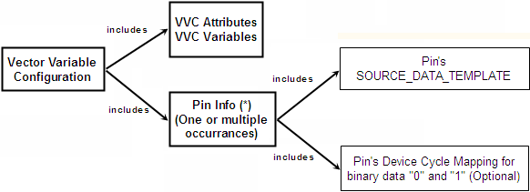
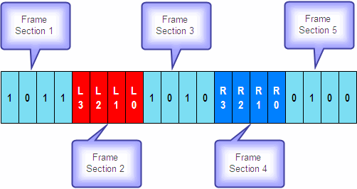
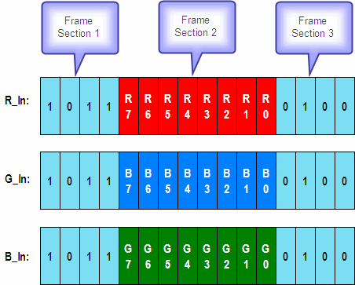

Vector variable configuration
The vector variable configuration (VVC) defines frame source templates for the source pins, and how the binary content of the vector variables is to be translated into waveform DC/DC power units. The VVC is structured as follows:

The following is the VVC syntax:
ATTR DIGDATA | DIGDATA FLAT VARIABLESVariable (, Variable)* PINSpin(, pin) * SOURCE_DATA_TEMPLATE: Template_Section(; Template_Section) * MAPPING 0device_cycle_name_1 | %physical_waveform_index_1 1device_cycle_name_2 | %physical_waveform_index_2
The asterisk stands for 0 or more occurrences of the preceding expression enclosed by parentheses. The internal structure of a Template_Section is explained below.
VVC Attributes
ATTR DIGDATA | DIGDATA FLATThe attribute decides whether the source data is located in a DSRC label or in the main label:
DIGDATAindicates that the source data is stored in a DSRC label.DIGDATA FLATindicates that the source data is included in the main label.
VVC Variables
VARIABLESVariable (, Variable)*
One VARIABLES statement can define multiple variables (separated by a comma), which are used in one VVC. Each variable is used in the source data template to represent one specific waveform. Only alphabetic or numeric characters can be used as the variable name. The space character is not allowed as part of the name.
The variables that are defined in the VVC are strictly speaking vector variable templates. The real vector variables are defined in the VVC usage. However, if you use the GUI to define the VVC and VVCU, the VVC variable names will also be used for the actual vector variables. The vector variables defined in the VVCU are the ones that must be used by the VECTOR API.
Pin Info
A VVC can contain several Pin Info blocks. The indivdual statements are (the asterisk stands for 0 or more occurrences of the preceding expression enclosed by parentheses):
- PINSpin (, pin) *
This parameter specifies the source pins to which this Pin Info block is to apply. If more than one pin is specified, the pin names must be separated by a comma. Note that pin groups are not supported.
- SOURCE_DATA_TEMPLATE: Template_Section (;
Template_Section) *
The SOURCE_DATA_TEMPLATE is a string expression that describes the frame source template for the pins defined in the
PINSsection. It consists of one or more sections, which are separated by a semicolon. If the VVC is associated with a DSRC label, the main label from which the source data are applied must contain a separate SRCV instruction for every section.A template section can consist of one or more variable or fixed constituents. The variable constituents have the following format:
Variable[Bit_Index_or_Range (, Bit_Index_or_Range)*]
Variable must have been defined in the VARIABLES statement. Note that the parentheses belong to the meta-language (that is, they must not be specified in the expression), whereas the brackets belong to the object language (that is, they must be specified). The asterisk, which also belongs to the meta-language, stands for 0 or more occurrences of the preceding expression enclosed by parentheses.
The bit index or bit range selects bits of the waveform that is represented by Variable. An example is
LEFT[3,4,7-15].Besides such variable constituents, a template can also contain fixed bits, which correspond to a single waveform. These can be identified by
- the device cycle name, or
- the waveform index (which must be prefixed with %), or
- 0 or 1, which will be interpreted according to the definitions in the
MAPPING section.
If the same fixed expression is repeated n times, this can be abbreviated as expression{n}. You can also require that when the VVCU is modified and the static data is downloaded again, certain waveforms are not overwritten. This is coded as #{n}, which means that n continuous waveforms are to be left as they are.
The following is an example:
SOURCE_DATA_TEMPLATE 0{4},vvc_var[0-3],one,one,%2,%4It consists of 4 times the waveform that is mapped to 0 in the MAPPING section, a vector variable of width 4, 2 times the waveform with the device cycle name
one, and the waveforms with the DC/DC power units 2 and 4.
- MAPPING
0device_cycle_name_1 | %physical_waveform_index_1
1device_cycle_name_2 | %physical_waveform_index_2
The source data is normally accessed by the vector variables. Vector variables contain a bit sequence. This bit sequence must be translated into a sequence of waveform DC/DC power units. The MAPPING section defines which waveform DC/DC power units are associated with 0 and with 1. Note that 0 and 1 must not be mapped to the same index. The mapping is also used in the SOURCE_DATA_TEMPLATE, where you can specify fixed elements by 0 or 1.
You can either specify the waveform index directly in the format %physical_waveform_index, or the device cycle name of the respective waveform. In the latter case, the name must be included in double quotes if it contains spaces.
The following is a complete Pin Info block:
PINS pin1, pin2SOURCE_DATA_TEMPLATE 0{4},vvc_var[0-3],one,one,%2,%4MAPPING0 zero1 one
Examples
Serial application examples
The design of the VVC is very flexible, so it can be used for a wide variety of applications, especially to any vector sequence with repetitive pattern. The following examples briefly show how the VVC is used.

This setup can be implemented both with a normal and a flat setup:
- Normal setup: The main label sources the variable waveform data (sections 2 and 4)
from a separate DSRC
label:
SOURCE_DATA_TEMPLATE L[3-0];R[3-0] - or - SOURCE_DATA_TEMPLATE L[3,2,1,0];R[3,2,1,0] - or - SOURCE_DATA_TEMPLATE L[3],L[2],L[1],L[0];R[3],R[2],R[1],R[0]
Sections 2 and 4 are sourced in the main label by two SRCV instructions inside a counted loop. Sections 1, 3, 5 are defined in the main label.
Note The semicolon separates two sections of a frame source template. - Flat setup: Both static and variable vectors are contained in the main
label:
SOURCE_DATA_TEMPLATE One,Zero,One,One,L[3-0],One,Zero,One,Zero,R[3-0],Zero,One,Zero,Zero
The flat setup can greatly reduce the possibility of the queue empty problem, compared with using a counted loop to source the waveform data, so the test system can run at a higher speed.
Parallel application example

To source the variable waveform data from a separate DSRC label, the following VVC can be used for the above parallel application.
ATTR DIGDATA #Source type #Declaration of variables VARIABLES R,G,B PINS R_In SOURCE_DATA_TEMPLATE R[7-0] MAPPING 0 d0 1 d1 PINS G_In SOURCE_DATA_TEMPLATE G[7-0] MAPPING 0 d0 1 d1 PINS B_In SOURCE_DATA_TEMPLATE B[7-0] MAPPING 0 d0 1 d1
Functional changes
- Introduced before SmarTest 6.3.2